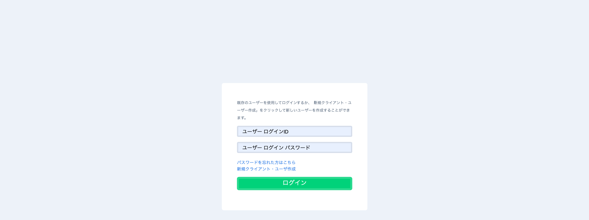
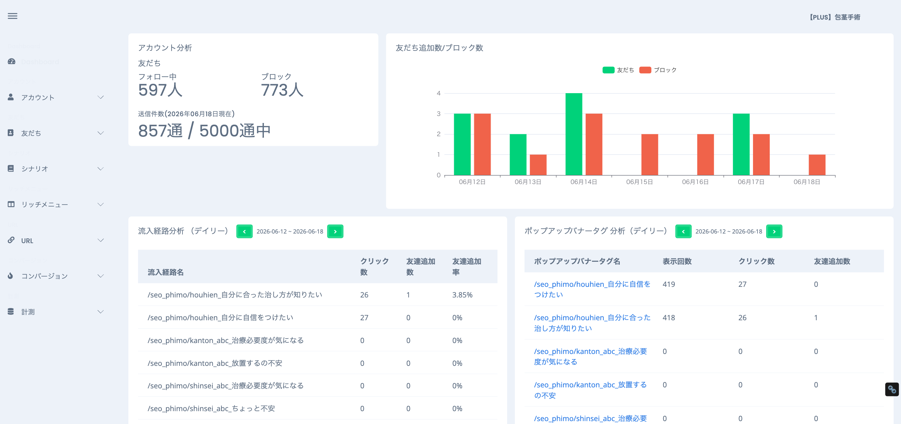
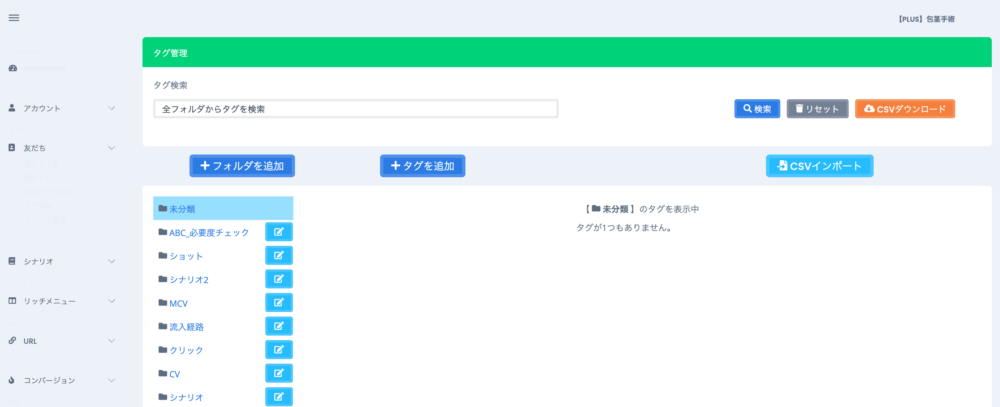
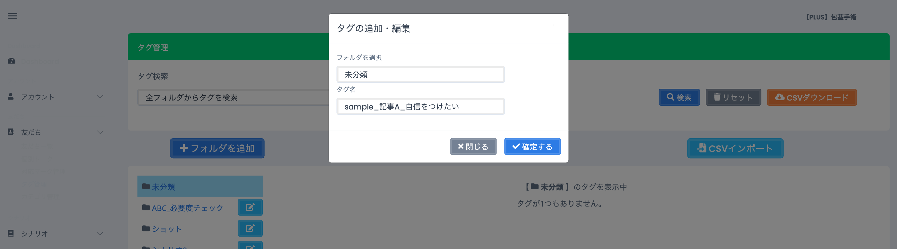
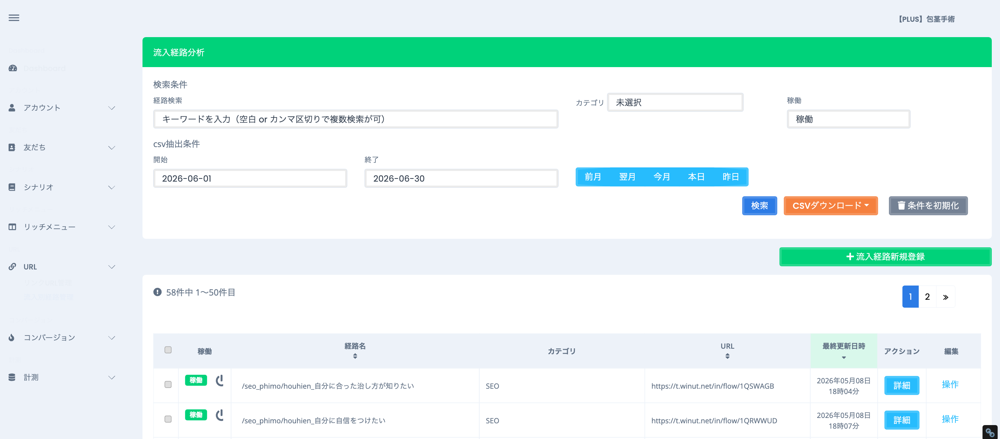
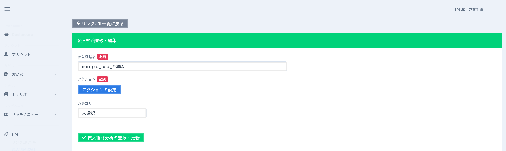
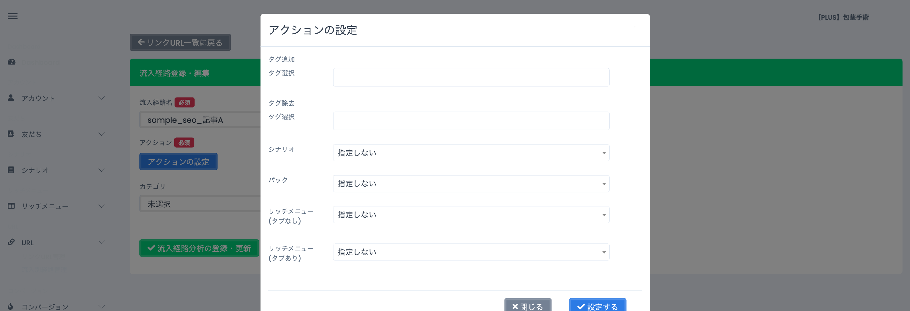
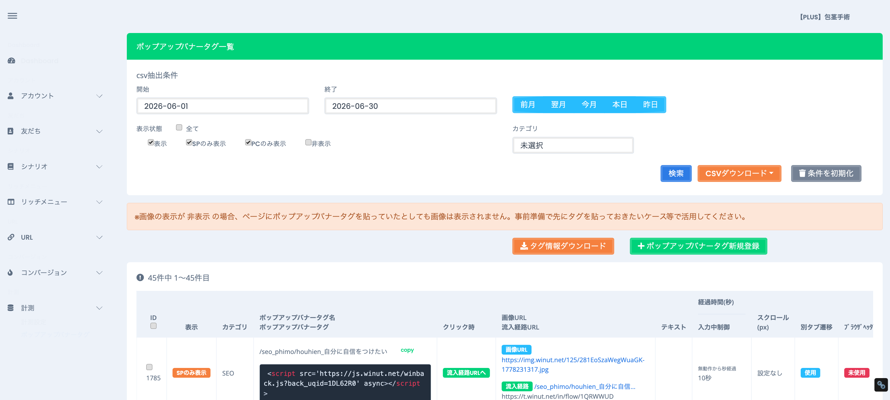
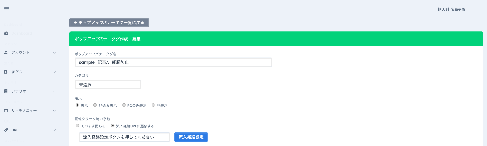

💡 このマニュアルでできるようになること
- LINEの友だちを「どこから来たか」で分類するタグを作る
- そのタグを自動で付ける友だち追加リンク（流入経路）を作る
- 記事から離脱しそうな人にLINE登録を促すポップアップ（離脱防止タグ）を設置する
0. まず全体像をつかむ
Winutでやることは、ざっくり3ステップ。この順番で作ると各パーツがキレイに連動します。
💡 3つのつながりを一言で
「タグ」を運ぶ「乗り物」が流入経路（リンク）、その乗り物を呼び出す「呼び込み看板」が離脱防止ポップアップ。
1. 前提：Winutにログインする
ブラウザで manage.winut.net/login を開きます。
- ログインID・パスワードを入力する（担当アカウントのもの）。
- 「ログイン」ボタンを押す。
- 画面右上に担当アカウント名（例：【PLUS】包茎手術）が出ていればログイン成功。

📷
ここに画像を貼る
撮るポイント：ID・パスワード欄＋「ログイン」ボタン
保存名：images/01-login.png

📷
ここに画像を貼る
撮るポイント：右上のアカウント名＋左メニュー全体
保存名：images/02-dashboard.png
⚠ 注意
- Winutは「1アカウント＝1ログイン」。別ジャンルを触るときは一度ログアウトして入り直す。
- 友だちリストには個人情報が含まれる。CSV等は社内ルールに従って扱うこと。
2. ①タグを作成する
どこを開く？
左メニュー 友だち → タグ管理（URL：manage.winut.net/tags/ta_list）
手順
- タグ管理を開く。左側にフォルダ一覧が並んでいる（未分類／流入経路／クリック／CV など）。
- 整理用にフォルダを分けたい場合は 「＋フォルダを追加」 で先に作る（任意）。
- 画面上部の 「＋タグを追加」 を押す。
- 「タグの追加・編集」ウィンドウが開く。
- フォルダを選択（どこに入れるか）と タグ名 を入力する。
- 「確定する」 を押す。これでタグが1つ完成。

📷
ここに画像を貼る
撮るポイント：左のフォルダ一覧＋上部の「＋タグを追加」ボタン
保存名：images/03-tag-list.png

📷
ここに画像を貼る
撮るポイント：フォルダ選択・タグ名の入力欄・「確定する」ボタン
保存名：images/04-tag-modal.png
💡 タグ名の付け方のコツ
後から見て「どこから来た友だちか」が分かる名前にする。流入経路名と揃えると管理がラク。例：
seo_phimo_houhien_自信（〔ジャンル_記事_訴求〕で統一）
3. ②流入経路を作成する
流入経路＝「友だち追加リンク」。このリンクから登録した人に、①で作ったタグが自動で付きます。
どこを開く？
左メニュー URL → 流入別経路管理（URL：manage.winut.net/inflow_path/in_list）
手順
- 右上の緑ボタン 「＋流入経路新規登録」 を押す。
- 流入経路名 を入力（必須・日本語OK）。タグ名と揃えると分かりやすい。
- 青い 「アクションの設定」 ボタンを押す。
- 開いた窓の 「タグ追加 → タグ選択」 で、①で作ったタグを選ぶ。
- （任意）追加と同時に配信を始めたいなら「シナリオ」を選ぶ。パック・リッチメニューも必要なら設定。
- 「設定する」 で窓を閉じる。
- （任意）カテゴリ を選ぶ（例：SEO）。分析のフィルタに使う。
- 下部の 「流入経路分析の登録・更新」 を押して保存。
- 一覧に戻ると、作った経路の行に URL（t.winut.net/in/flow/◯◯◯） が発行されている。これが友だち追加リンク。記事・LP・ボタンに設置する。

📷
ここに画像を貼る
撮るポイント：「＋流入経路新規登録」ボタン＋既存経路のURL列
保存名：images/05-inflow-list.png

📷
ここに画像を貼る
撮るポイント：流入経路名・「アクションの設定」ボタン・「登録・更新」ボタン
保存名：images/06-inflow-form.png

📷
ここに画像を貼る
撮るポイント：「タグ追加 → タグ選択」で①のタグを選んでいるところ
保存名：images/07-action-modal.png

📷
ここに画像を貼る
撮るポイント：一覧で t.winut.net/in/flow/◯◯ のURLが出ている行
保存名：images/08-inflow-url.png
💡 ここが①と②のつなぎ目
「アクションの設定 → タグ追加」で①のタグを指定する。これを忘れると、リンクから登録されてもタグが付かず分類できない。
4. ③離脱防止タグ（ポップアップバナータグ）を作成する
記事を離脱しそうな人に出すポップアップ画像。クリックすると②の友だち追加リンクへ飛びます。
どこを開く？
左メニュー 計測 → ポップアップバナータグ（URL：manage.winut.net/back/ba_list）
手順
- 緑ボタン 「＋ポップアップバナータグ新規登録」 を押す。
- ポップアップバナータグ名 を入力する。
- 表示 を選ぶ：表示／SPのみ表示／PCのみ表示／非表示。スマホだけに出すなら「SPのみ表示」。
- 画像クリック時の挙動 で 「流入経路URLに遷移する」 を選ぶ。すると下に「流入経路設定」ボタンが出る。
- 「流入経路設定」 ボタンを押し、②で作った流入経路を選ぶ。
- 表示タイミングを決める（任意）：経過時間（秒）＝開いて何秒後に出すか（上限900秒）。スクロール（pixel）＝何px下げたら出すか。「ページ最下部のスクロール時に表示」もあり。
- バナー用画像（必須）を「ファイルを選択」でアップロード。サイズは 1000×1490px 推奨。
- （任意）画像上のテキスト1行目／2行目（各15文字以内）で画像に文字を重ねられる。
- 下部の 「ポップアップバナータグの登録/編集」 を押して保存。
- 一覧に戻ると、その行に 貼付用の<script>タグ が表示される。「copy」 でコピーし、LPの </body> 直前などに貼る。

📷
ここに画像を貼る
撮るポイント：「＋新規登録」ボタン＋既存行の<script>タグと「copy」ボタン
保存名：images/09-popup-list.png

📷
ここに画像を貼る
撮るポイント：タグ名・表示選択・「画像クリック時の挙動→流入経路URLに遷移する」＋「流入経路設定」ボタン
保存名：images/10-popup-form-top.png

📷
ここに画像を貼る
撮るポイント：バナー用画像の選択・画像上テキスト・経過時間・スクロール・「登録/編集」ボタン
保存名：images/11-popup-form-bottom.png

📷
ここに画像を貼る
撮るポイント：一覧の<script>タグと「copy」ボタン
保存名：images/12-popup-script.png
貼り付けるタグの例（uqidの部分は1つずつ違う）：
<script src='https://js.winut.net/winback.js?back_uqid=◯◯◯◯◯◯◯' async></script>
⚠ 注意
- 「表示」を“非表示”にしていると、タグをLPに貼ってもポップアップは出ない（先にタグだけ仕込む時用）。公開時は表示状態を確認。
- クリック後の遷移先（流入経路）の設定を忘れると、ポップアップを押しても友だち追加に進まない。
5. まとめ：3つの関係と最終チェック
💡 完成イメージ
- ①タグ … 友だちに付くラベル
- ②流入経路 … ①のタグを付ける友だち追加リンク（URL発行）
- ③離脱防止タグ … ②のリンクへ飛ばすポップアップ（LP貼付タグ発行）
公開前チェックリスト
| ✓ | 項目 |
|---|---|
| ☐ | ①タグを作った（流入経路名と揃った分かりやすい名前） |
| ☐ | ②流入経路の「アクションの設定」で①のタグを「タグ追加」に指定した |
| ☐ | ②を保存して、t.winut.net/in/flow/◯◯ のURLが発行されている |
| ☐ | ③で「流入経路URLに遷移する」を選び、②の流入経路を紐付けた |
| ☐ | ③のバナー画像をアップし、表示状態を「表示／SPのみ」等に設定した |
| ☐ | ③の<script>タグをコピーして、対象LPに貼った |
困ったら：画面の名前・URL・どのボタンで詰まったかをメモして、担当者に共有してください。
スクショの入れ方：このHTMLと同じ階層の images/ フォルダに、各枠に書かれた保存名（例 01-login.png）でPNGを置くと、自動でその場所に表示されます。貼り込み作業は不要です。